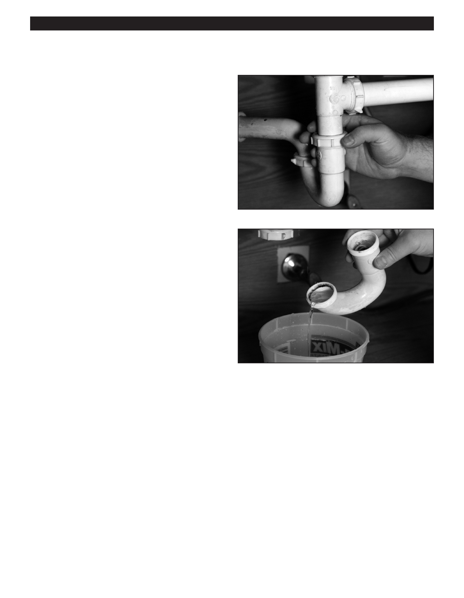

PA RT I C I PA N T R E S O U R C E G U I D E
Fixing a Sink Drain Trap (continued)
How-to Steps:
Cleaning a Drain Trap
1. Put a towel or drop cloth and a pail under the drain trap.
2. Unscrew the slip nuts on the drain pipe. Loosen them with a
tongue and groove pliers, and then remove them with your
hand.
3. Remove the trap section over the pail.
4. Clear out the trap section. Use a brush to clean the bend in
the trap.
5. Examine the slip nut washers for wear and replace them if
needed.
6. Reattach the trap section. Tighten the slip nuts securely.
7. Run the water and check for leaks.
8. Remove the pail and drop cloth.
Notes:
78